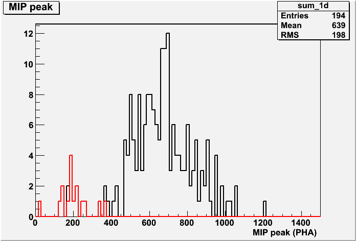
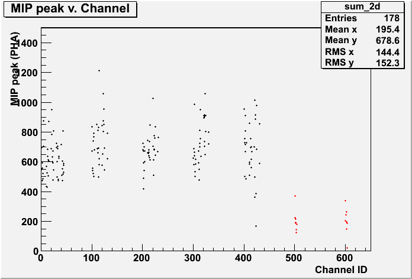
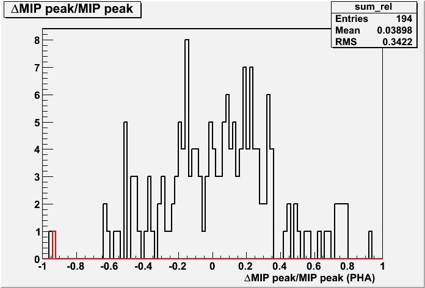
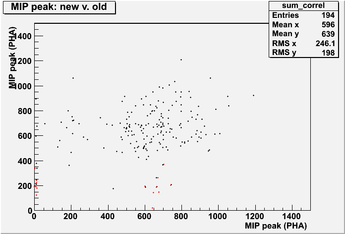

ACD_Gain Calibration r0250381744_gain
Input:
Files:
-
Type: Pedestal. Path: /afs/slac.stanford.edu/g/glast/ground/releases/monitor/ACD/FLIGHT/Ped/081208/r0250381744_ped.xml
- Type: Svac. Path: root://glast-rdr.slac.stanford.edu//glast/Data/Flight/Level1/LPA/prod/1.69/svac/r0250381744_v000_svac.root
- Type: Svac. Path: root://glast-rdr.slac.stanford.edu//glast/Data/Flight/Level1/LPA/prod/1.69/svac/r0250387900_v000_svac.root
- Type: Svac. Path: root://glast-rdr.slac.stanford.edu//glast/Data/Flight/Level1/LPA/prod/1.69/svac/r0250393965_v001_svac.root
- Type: Svac. Path: root://glast-rdr.slac.stanford.edu//glast/Data/Flight/Level1/LPA/prod/1.69/svac/r0250399977_v000_svac.root
- Type: Svac. Path: root://glast-rdr.slac.stanford.edu//glast/Data/Flight/Level1/LPA/prod/1.69/svac/r0250405966_v001_svac.root
Time Span (MET seconds): 250381746.9232 - 250410431.0866
Triggers used: 7462018
Use History
- stored at Tue Apr 9 11:48:51 2013
Output:
Summary Plots


Plots with respect to reference calibration


Reference Calibration
/afs/slac.stanford.edu/g/glast/ground/releases/monitor/ACD/FLIGHT/ElecGain/081208/r0250381744_gain.xml
Files:
-
Type: Pedestal. Path: /afs/slac.stanford.edu/g/glast/ground/releases/monitor//ACD/FLIGHT/Ped/081208/r0250381744_ped.xml
- Type: Svac. Path: root://glast-rdr.slac.stanford.edu//glast/Data/Flight/Level1/LPA/prod/1.69/svac/r0250381744_v000_svac.root
- Type: Svac. Path: root://glast-rdr.slac.stanford.edu//glast/Data/Flight/Level1/LPA/prod/1.69/svac/r0250387900_v000_svac.root
- Type: Svac. Path: root://glast-rdr.slac.stanford.edu//glast/Data/Flight/Level1/LPA/prod/1.69/svac/r0250393965_v001_svac.root
- Type: Svac. Path: root://glast-rdr.slac.stanford.edu//glast/Data/Flight/Level1/LPA/prod/1.69/svac/r0250399977_v000_svac.root
- Type: Svac. Path: root://glast-rdr.slac.stanford.edu//glast/Data/Flight/Level1/LPA/prod/1.69/svac/r0250405966_v001_svac.root
Time Span (MET seconds): 250381746.9232 - 250410431.0866
Triggers used: 7462018
Comments
- Report made at 2013-04-09 18:36:40 UTC by user damgreen
- Data from Mission week 26